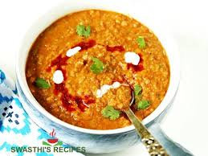
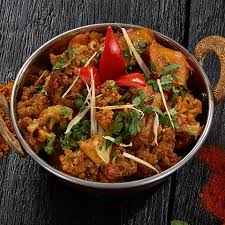
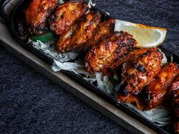
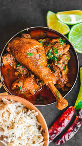
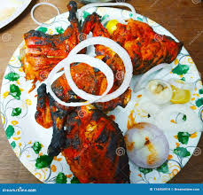
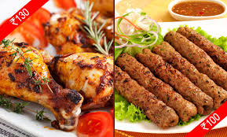
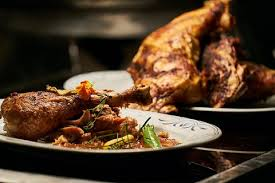
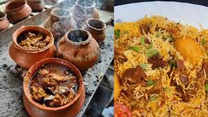

Veg Items

Chana Masala
Chole (or Chana Masala) is a popular North Indian dish featuring spiced, tangy chickpeas in a tomato-onion gravy, often served with deep-fried bhatura, poori, or rice.
Price: $20
$40
50% off

Paper Dosa
A paper dosa is a wafer-thin, extra-crispy version of the traditional South Indian dosa. It is made from a fermented batter of rice and urad dal (black gram), spread
Price: $30
$60
50% off

Veg Thali
A veg thali is a complete, nutritionally balanced Indian meal served on a single large platter (called a "thali"). It typically consists of a central staple—rice or
Price: $40
$80
50% off

Matar Paneer
Matar Paneer (peas and paneer) is a classic North Indian vegetarian dish featuring soft paneer cubes and green peas simmered in a spiced tomato-onion gravy.
Price: $30
$60
50% off

Sahi Paneer
Shahi Paneer (literally "Royal Paneer") is a premium North Indian dish from Mughlai cuisine. It features soft paneer cubes in a rich, velvety gravy made of onions, nuts
Price: $40
$80
50% off

Idli Dosa
Idli and Dosa are the twin pillars of South Indian breakfast, both crafted from a fermented batter of rice and urad dal (black lentils). While they share an origin,
Price: $30
$60
50% off

Puri Sabji
Puri Sabji (also known as Poori Bhaji) is a staple Indian breakfast consisting of deep-fried, fluffy whole wheat bread (Puri) served with a spiced vegetable curry (Sabji).
Price: $40
$80
50% off

Samosa Chai
Samosa Chai is the ultimate Indian savory snack paired with a hot, milky cup of tea. It is more than just food; it’s a social ritual found at every street corner
Price: $10
$20
50% off

Paper Dosa
Paper Dosa is a wafer-thin, extra-crispy South Indian specialty made from a fermented batter of rice and urad dal. It is celebrated for its delicate
Price: $20
$40
50% off

Soya Chap
Soya Chaap is a popular North Indian vegetarian meat substitute made from a blend of soybean chunks, soy flour, and wheat flour. Shaped like ribs ab=nd often wrapped.
Price: $20
$40
50% off
Non-Veg Items

Kadhai Chicken
Kadhai Chicken is a robust, spicy North Indian dish where chicken is slow-cooked with tomatoes, ginger, garlic, and a signature blend of coarsely crushed spices in a traditional iron wok called a kadhai.
Price: $45
$60
25% off

Chicken Biryani
Chicken Biryani is a globally renowned Indian rice dish made by layering fragrant, long-grain basmati rice with succulent marinated chicken and a complex blend of aromatic spices.
Price: $45
$60
25% off

Chicken Lolipop
Chicken Lollipop is a popular Indo-Chinese appetiser made from a "frenched" chicken winglet. The meat is cut loose from the bone end and pushed down to create a signature lollipop shape.
Price: $40
$80
50% off

Handi Chicken
Handi Chicken is a classic North Indian dish cooked and traditionally served in a handi, a deep, wide-mouthed clay pot. This slow-cooking method, often referred to as "Dum" cooking.
Price: $30
$60
50% off

Fried Chicken
Fried Chicken in India ranges from the globally famous KFC style to spicy, local South Indian-inspired varieties. In North India and Uttar Pradesh, the breaded, "crunchy" variety and the heavily spiced,
Price: $45
$60
25% off

Chicken Roll
A chicken roll is a versatile Indian street food classic featuring marinated, grilled, or sautéed chicken wrapped in a flatbread. Depending on the region, it is often called a Kathi Roll.
Price: $20
$40
50% off

Chicken lababda
Chicken Lababdar is a luxurious, creamy North Indian curry that sits right between Butter Chicken and Chicken Tikka Masala. The word "Lababdar" signifies a dish that is indulgent.
Price: $450
$60
25% off

Handi Mutton
Handi Mutton (or Mutton Handi) is a beloved slow-cooked meat dish from Northern India and Bihar. It is traditionally cooked in a Handi (a deep, narrow-mouthed earthen clay pot).
Price: $80
$100
20% off

Nonveg Thali
A Non-Veg Thali is a complete, indulgent meal that serves as a showcase of regional meat specialties. In Uttar Pradesh, this usually leans towards the Mughlai or Awadhi style.
Price: $90
$120
25% off

Fish curry
Fish Curry in India is a diverse dish that changes dramatically as you move from the coastal regions to the inland plains of Uttar Pradesh. While coastal versions use coconut or tamarind.
Price: $90
$120
25% off